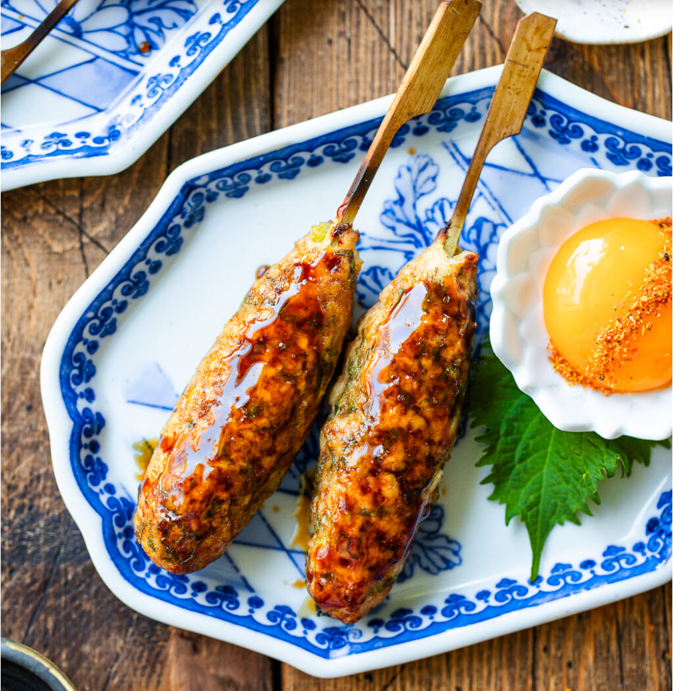

Tsukune
In Japan, tsukune (つくね) refers to ground chicken meatballs mixed with green onions and various seasonings. They’re usually shaped into ovals, skewered, grilled, and glazed with a sweet and savory sauce called tare. Popular fare at bars, parties, and potlucks, tsukune are also commonly prepared at home as skewer-free, round meatballs or in Tsukune Hot Pot.
Ingredients
- Ground Chicken
- Shisho leaves
- Green onions/scallions
- Miso
- Sesame oil
- Salt
- Yakitori sauce:
- Sake
- Mirin
- Soy sauce
- Brown sugar
- Shichimi tograshi
How to make:
Step 1 – Make the yakitori sauce in a small saucepan. Bring the ingredients to a boil, then simmer over medium heat for 30 minutes.
Step 2 – Cook one-third of the ground chicken in an ungreased pan over medium-low heat; cool completely.
Step 3 – Knead. Combine cooked and raw chicken in a bowl with shiso, scallions, miso, sesame oil, and salt. Knead by hand until pale and sticky.
Step 4 – Shape an oval patty 4 inches (10 cm) long, lay a soaked bamboo skewer on top, and wrap meat firmly around the stick. Repeat, keeping sizes equal.
Step 5 – Broil. Arrange skewered meatballs on a wire rack set over a foil-lined sheet, handles facing out. Broil, flip, and repeat on the other side until cooked through.
Step 6 - Glaze. Brush with yakitori sauce. Broil until bubbling, the flip and repeat on the other side.
Step 7 - Serve. Enjoy immediately, sprinkled with shichimi and dipped in Japanese mayo or raw egg yolk.